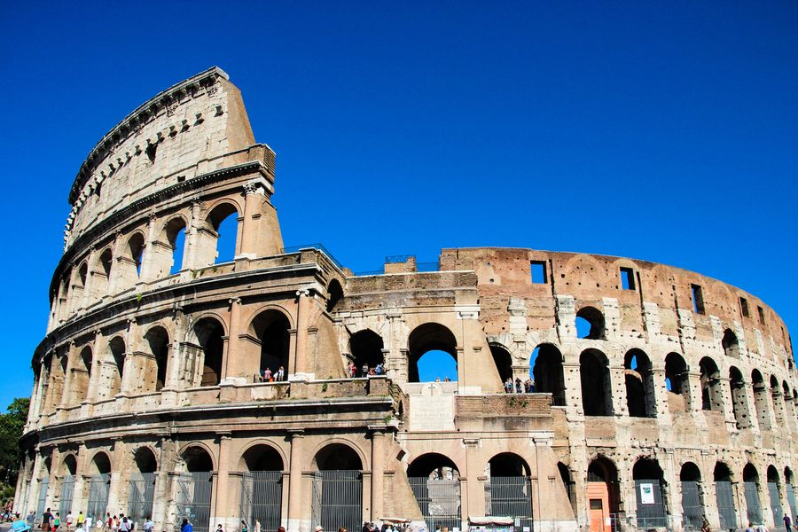
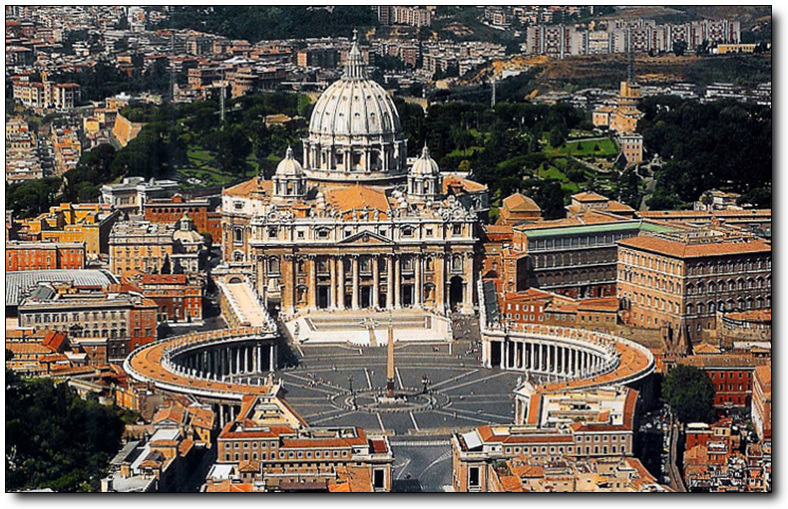
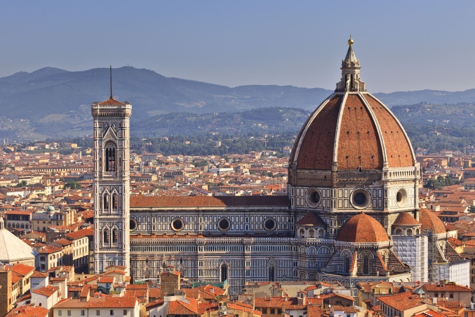
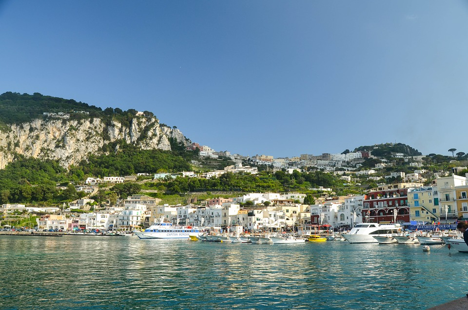
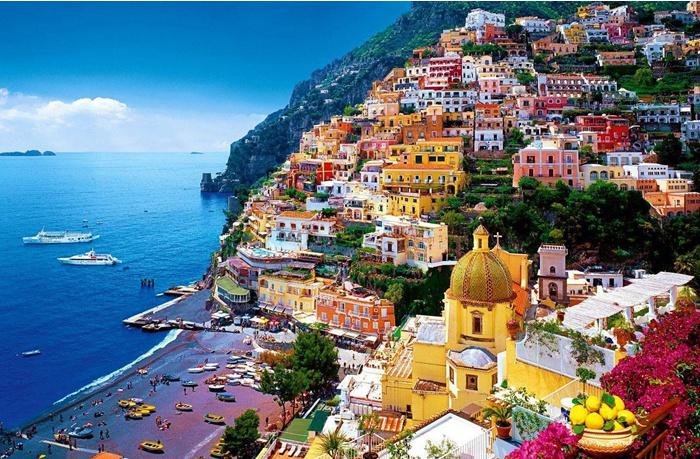
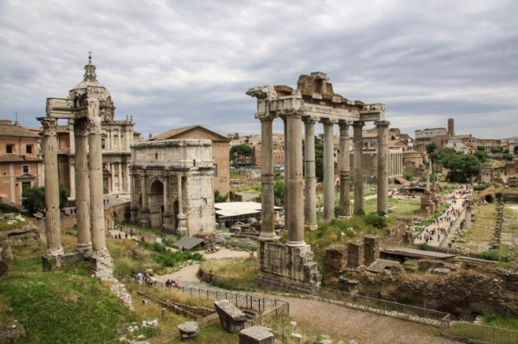

1.콜로세움이탈리아 로마의 중심지에 위치한, 고대 로마 시대에 건설된 투기장. 
|
2. 밀라노 대성당이탈리아 롬바르디아주 밀라노에 자리한 밀라노 대교구의 주교좌 성당 |
|---|---|
3. 바티칸바티칸 시국은 남유럽에 위치한 도시국가로, 이탈리아 로마 시에 둘러싸인 내륙국이다. 
|
4. 피사의 사탑이탈리아 토스카나 주 피사 시의 피사 대성당에 있는 높이 55m의 종탑이다. |
5. 피렌체 대성당붉은 기와 돔, 컬러 대리석 외관, 우아한 조토 탑으로 유명한 랜드마크인 1200년대 대성당이다. 
|
6. 카프리 섬카프리 섬은 이탈리아 남부 캄파니아주 나폴리현에 딸린 섬으로, 나폴리 만 입구, 소렌토 반도 앞바다에 위치한다. 
|
7. 아말피 해안아말피 해안은 이탈리아 캄파니아주 살레르노현 소렌토 반도 남해안에 위치한 해안으로 티레니아 해와 살레르노 만에 인접해 있다. 
|
포로 로마노포룸 로마눔은 고대 로마 시대의 유적지로, 이탈리아 로마에 있으며 현재는 관광지로 매우 유명하다. 
|